Mayo 2022
Boletín Interno
Industriales del Comité de Proveedores del CLAUZ participaron en la conferencia sobre Coaching Kata que expertos de Volkswagen Group Academy impartieron a gerentes, supervisores y líderes de equipo con la finalidad de entrenar a su gente de manera científica de pensar y actuar hacia el reforzamiento de patrones de Mejora.
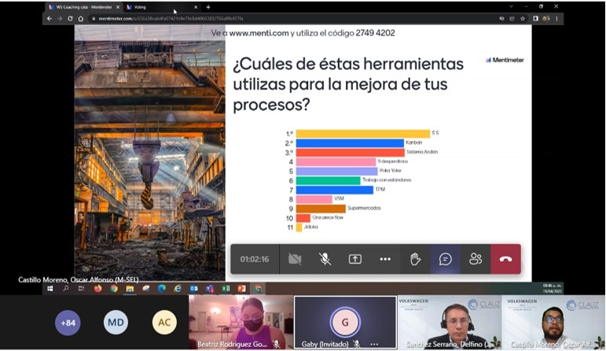Cabe mencionar que, el Coaching Kata es una interesante solución para que las personas que quieran comenzar su andadura en la implantación en su compañía, inicien su desarrollo y entrenamiento personal, practicando la mejora de los procesos de su empresa bajo la guía de expertos en la materia.
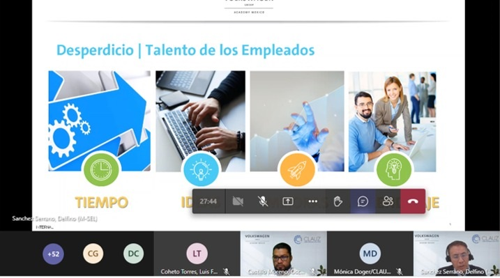Este paso, es la clave del éxito para que estos profesionales consigan llevar a cabo la implantación del COACHING KATA dentro de su compañía y aprendan a avanzar, obteniendo resultados en los procesos de mejora. Estas personas serán las responsables de entrenar a otros miembros de su empresa en la metodología LEAN KATA.
Para poder entender el concepto y práctica de Design Thinking instructores de Volkswagen Group Academy Mexico, generaron con industriales automotrices del Clústera, ideas innovadoras para entender y dar solución a las necesidades reales en sus empresas.
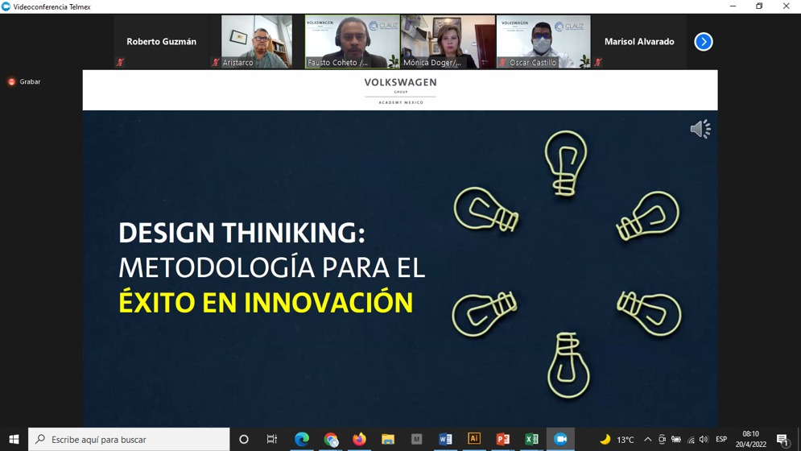Design Thinking, proviene de la forma en la que trabajan los diseñadores de producto. De ahí su nombre, que en español se traduce de forma literal como «Pensamiento de Diseño», aunque nosotros preferimos hacerlo como «La forma en la que piensan los diseñadores».
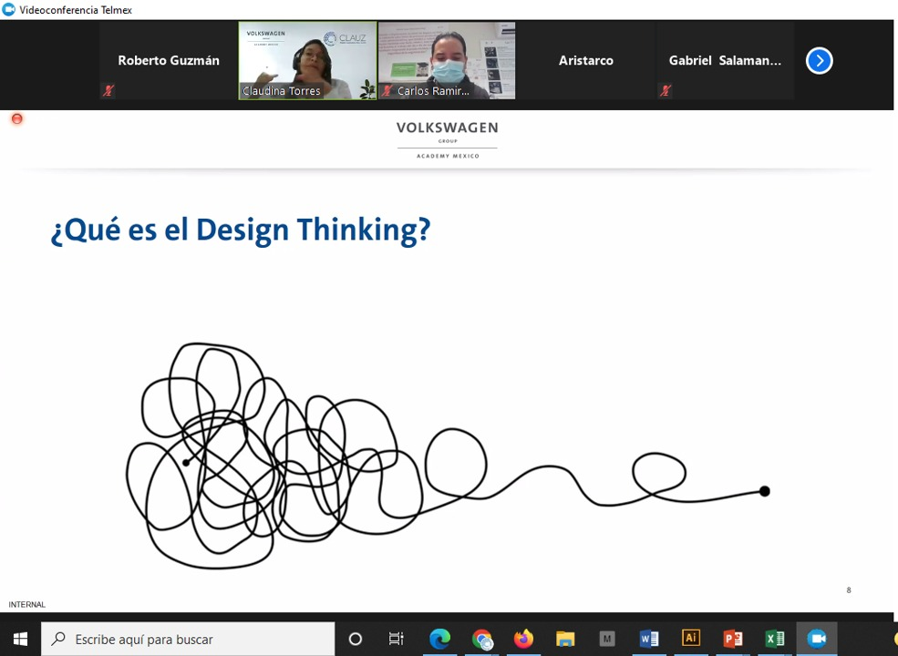Tal concepto, se empezó a desarrollar de forma teórica en la Universidad de Stanford en California, EEUU a partir de los años 70, y su primera aplicabilidad con fines lucrativos como «Design Thinking» la llevó a cabo la consultoría de diseño IDEO, siendo hoy en día su principal precursora. Design Thinking, se ha convertido en una disciplina que usa la sensibilidad y métodos de los diseñadores para hacer coincidir las necesidades de las personas con lo que es tecnológicamente factible y con lo que una estrategia viable de negocios puede convertir en valor para el cliente, así como en una gran oportunidad para el mercado.
En el marco del Comité de Desarrollo Humano, industriales de las áreas de Recursos Humanos, participaron en la construcción de equipos de alto empeño.
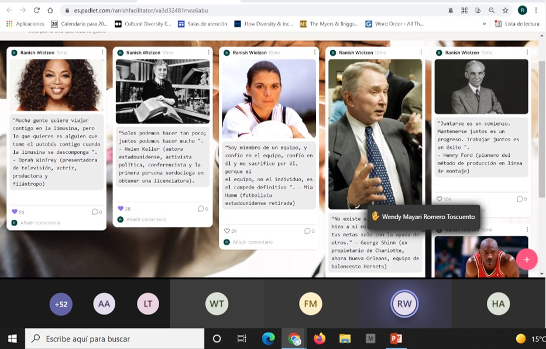La conferencia virtual, tuvo la finalidad de crear un ambiente de confianza, liderazgo, buena comunicación, un claro entendimiento del objetivo a lograr y la participación de cada miembro. Así se trata de aprovechar al máximo sus fortalezas.
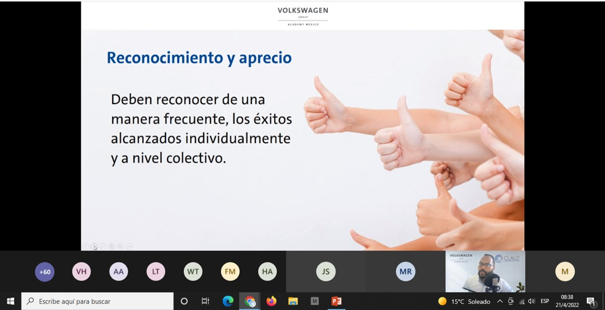Recientemente se llevó a cabo en las instalaciones de la Secretaria de Desarrollo Económico de Tlaxcala (SEDECO), la Segunda Sesión Ordinaria de Consejo Directivo del Clúster Automotriz Zona Centro, encabezada por el Presidente del Consejo Directivo, Ing. Jesús Rascón Celma quien estuvo acompañado por la Gobernadora del Estado de Tlaxcala, Lorena Cuéllar Cisneros y del Secretario de Desarrollo Económico en la entidad, Javier Marroquín Calderón.
En dicho encuentro, la Gobernadora del Estado Lorena Cuéllar, destacó que gracias a la colaboración y apoyo que se ha sostenido con el Clúster Automotriz realiza, las industrias establecidas en Tlaxcala, han incrementado su crecimiento y recuperación económica tras el impacto de la pandemia por Covid-19, el cual lo proyecta como un destino confiable para invertir.
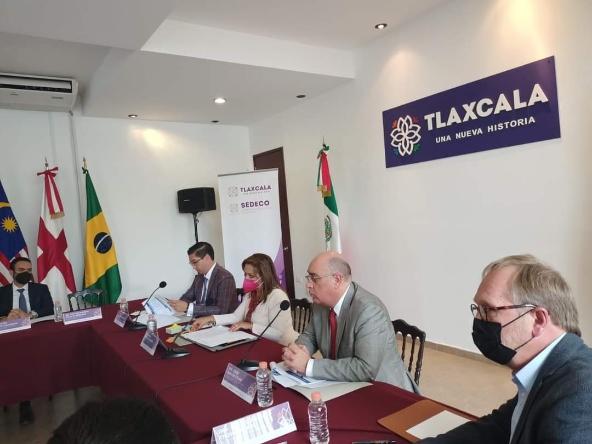La Gobernadora junto con el Secretario de Desarrollo Económico, Javier Marroquín, dieron a conocer que los días 12 y 13 de octubre del presente, se llevará a cabo la Octava Edición del Foro Automotriz 2022, el cual contará con un pabellón de expositores; stands de financiamiento, calidad, innovación, energía, reciclaje, temas legales, comercio exterior y de universidades; conferencias, encuentros de negocios y sesiones de networking.
En su intervención, el presidente del Consejo Directivo del CLAUZ, Jesús Rascón Celma agradeció el respaldo de la gobernadora sosteniendo que ambas instancias, trabajarán en virtud a la construcción de una industria automotriz tlaxcalteca próspera, de progreso, de vanguardia y que sea reconocida a nivel mundial.
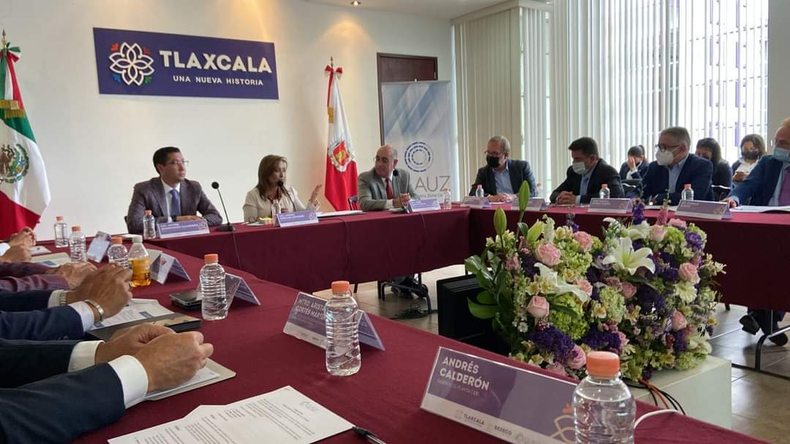“La industria de autopartes en Tlaxcala y Puebla emplea en total a alrededor de 70 mil personas en 180 empresas, al cierre de 2021 contribuimos a la producción de poco más de 430 mil autos que tuvo un valor superior a los 280 mil millones de pesos y el 85 por ciento de esta producción se exporta principalmente a Norteamérica, pero también a países como China, Japón, Australia, Sudáfrica y Rusia”, informó.
Por último, el Clúster Automotriz y el Gobierno del Estado de Tlaxcala, se comprometieron a seguir trabajando conjuntamente para generar un clima financiero favorable para las empresas locales, nacionales y extranjeras.
El camino de la Digitalización en tiempos de COVID. / Online
Miércoles 11 de mayo de 2022. / 8:00 – 9:30 a.m.
Houston, TENEMOS UN CONFLICTO: De la confrontación a la Colaboración
Jueves 12 de mayo de 2022. / 8:00 – 9:30 a.m.
La importancia de Lean en la manufactura actual. / Online
Martes 17 de mayo de 2022 / 8:00 – 9:30 a.m.
Coincidencias y diferencias de los enfoques alemán y americano. / Presencial en Tlaxcala.
Viernes 20 de mayo de 2022 / 17:00 hrs.
El Clúster Automotriz Zona Centro y la Fundación Wadhwani le invitan a conocer el Programa en Ventas 2022 cuya finalidad es hacer crecer las ventas de su empresa, ampliando las ventajas competitivas del negocio y generando mayor valor a los mercados objetivo.
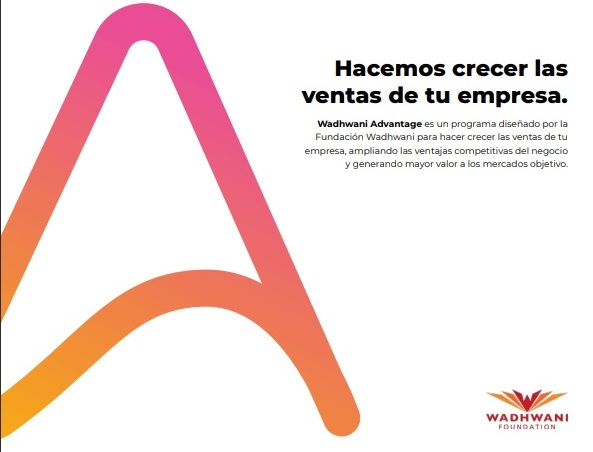Los encuentros presenciales se llevarán a cabo en Puebla y Tlaxcala.
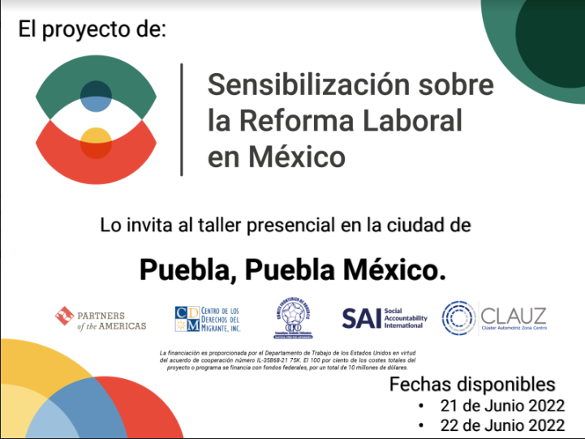 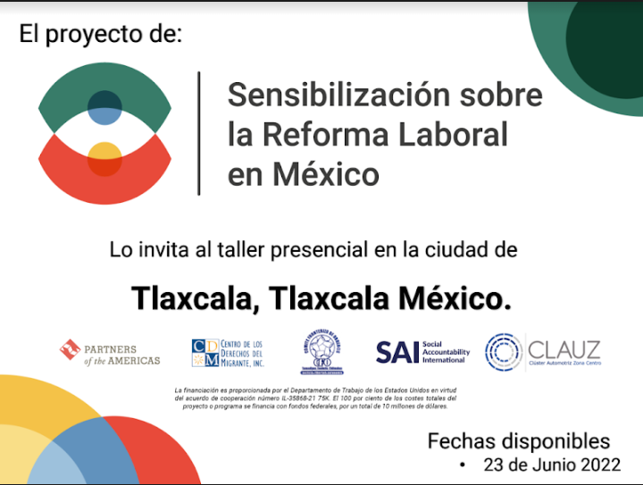Para mayor información al respecto de cursos y talleres de Volkswagen Group Academy Mexico, por favor comunicarse al 222 679 1544 y al e-mail: rguzman@clauz.mx en Horario de atención de lunes a viernes de 08:00 a 17:00 hrs.